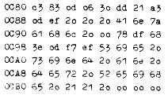

Nascom Journal |
4/80 |
NIMM |
|
Das vorliegende Spiel wurde für den Nascom 1 umgeschrieben ( früher Z 80 Kit siehe Applikationsbuch z 80) und läuft unter NAS – SYS 1.
Bei diesem Spiel handelt es sich, im Gegensatz zu einem Glücksspiel, um ein strategisches Spiel, wobei es allein auf die richtige Taktik ankommt. Zum besseren Verständnis des Spiels sollte man sich 30 Streichhölzer zu Hilfe nehmen; denn es geht bei diesem Spiel, welches zwischen dem Operator (Bediener) und dem Computer ausgetragen wird darum, diese Hölzchen abwechselnd wegzunehmen, wobei folgende Regeln zu beachten sind:
Nun sei noch gesagt, daß der Computer immer die momentane Anzahl der im Spiel befindlichen Hölzchen anzeigt, d.h. daß man die Anzahl der vom Computer abgezogenen Hölzchen nicht direkt ablesen kann. Doch wird diese kleine Schwierigkeit nach den ersten 2 – 3 Spielen unbedeutend. Nach jedem Durchlauf wird der Spielausgang (verloren oder gewonnen) angezeigt, gefolgt von einer Frage nach einem neuen Spielbeginn. Nach Bejahung dieser Frage (Drücken der Taste J für „Ja“) wird automatisch ein neues Spiel gestartet. Falls diese Frage jedoch verneint wurde (drücken einer bel. Taste), wird das Programm verlassen und an das Betriebssystem NAS-SYS übergeben.
|
Hier nun das Programm:  |
Start:E 0C80
Gerald Möse
........
Dieses Spiel ist für den Nascom 1 vorgesehen und arbeitet mit dem 2k Monitor NAS – SYS 1.
Anlaß zu diesem Programm gab das bekannte und beliebte Kegelspiel „Hohe Hausnummer“. Ziel dieses Spiels ist es, eine möglichst hohe Zahl zu erringen. Zu diesem Zweck wird mit Hilfe der Taste 4 ein schneilaufender Zählgenerator gestartet. Durch erneutes Niederdrücken der Taste 4 wird dieser Zählgenerator wieder gestoppt, und es erscheint
| Seite 5 von 20 |
|---|